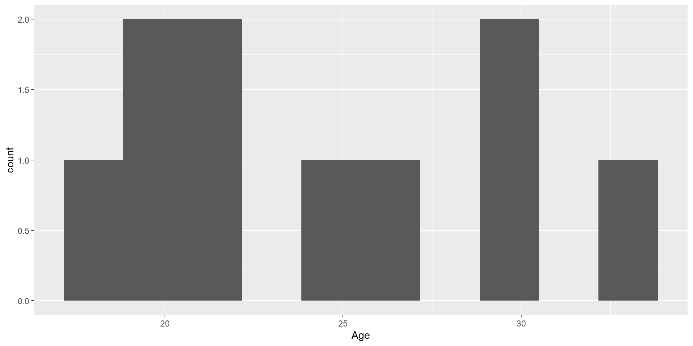
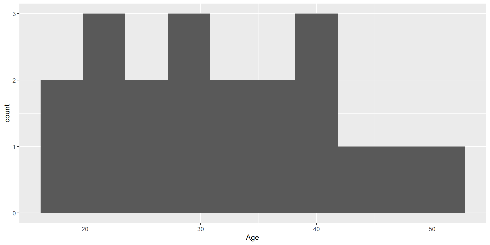
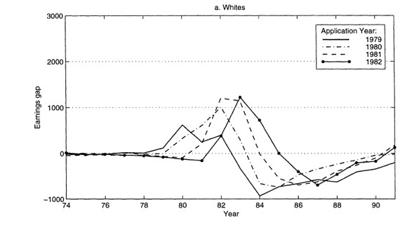
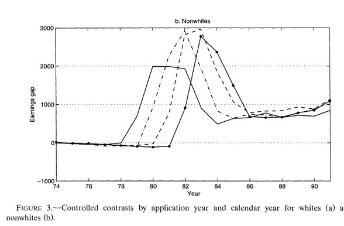
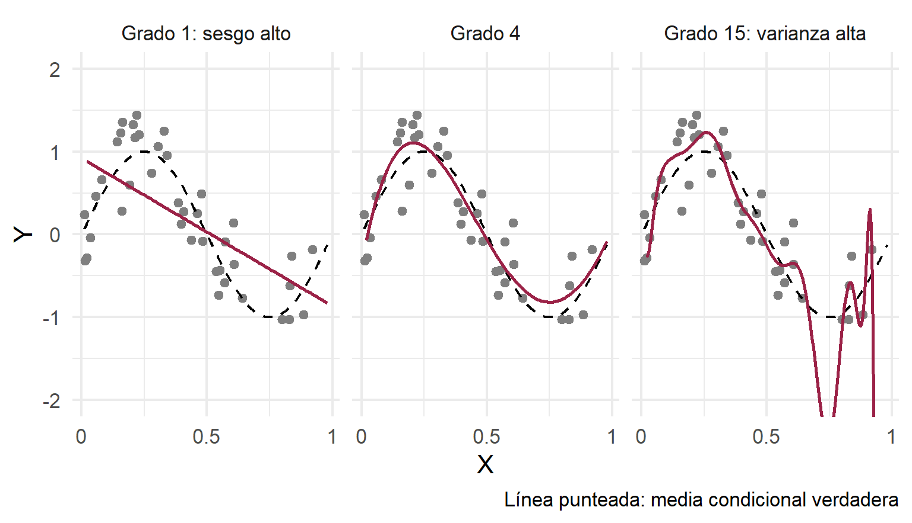
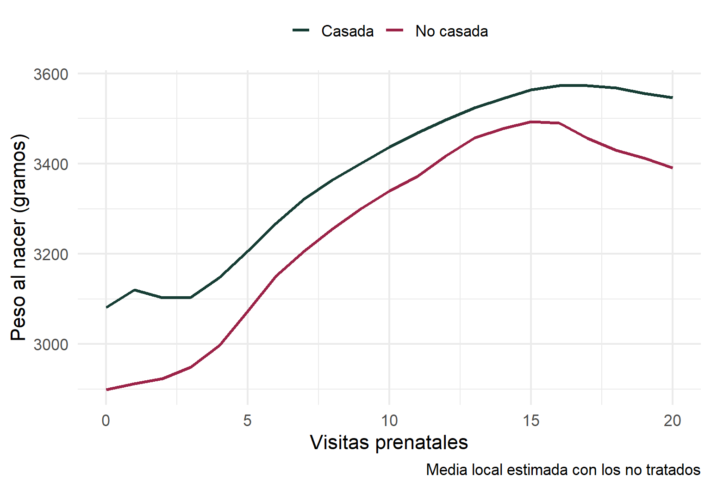

Selección por Observables
Inferencia Causal
Centro de Investigación y Docencia Económicas
Maestría en Economía
Selección por Observables
Motivación
Hemos estudiado la conveniencia de los experimentos para revelar relaciones causales
También hemos destacado las limitaciones de los diseños experimentales
Algunos métodos nos permiten usar datos observacionales y supuestos estadísticos para estimar relaciones causales en ausencia de variación experimental
Los métodos basados en selección en observables dieron origen a una literatura extensa en economía en la década de los 2000, sin embargo, su aplicación actual como método de inferencia principal es muy limitada
En cambio, los fundamentos de los métodos basados en observables son piezas clave en métodos modernos de inferencia causal que usan machine learning o los conocidos como estimadores doblemente robustos
Organización de lo que cubriremos en el curso
- Supuesto de independencia condicional
- Métodos de matching
- Matching basado en covariables
- Propensity score matching
- Otros métodos basados en el SIC
- Regresión
- Métodos locales
- Inverse probability weighting
- Métodos doblemente robustos
Recordatorio del sesgo de selección
Las razones que determinan la asignación del tratamiento determinan también el valor de \(Y\)
Una comparación observacional nos da el efecto del tratamiento más el sesgo de selección:
\[ \begin{aligned} E(Y|D=1)-E(Y|D=0)=&\overbrace{ E(Y(1)|D=1)-E(Y(0)|D=1)}^{\Delta_{TOT}\text{: efecto promedio en los tratados}}+\\& \underbrace{E(Y(0)|D=1)-E(Y(0)|D=0)}_{\text{Sesgo de selección}} \end{aligned} \]
Una forma de eliminar el sesgo de selección es mediante la asignación aleatoria del tratamiento
Esto no siempre es posible, por lo que recurrimos a supuestos estadísticos
Supuesto de independencia condicional
- Supuesto 1. Independencia condicional (SIC): condicional en una serie de características \(X\), los resultados potenciales son independientes del tratamiento
\[\{Y(0),Y(1)\}\perp D | X\]
- El SIC también se conoce como inconfundibilidad, ignorabilidad del tratamiento o unconfoundedness
Supuesto de independencia condicional
- El SIC dice que al controlar por una serie de características \(X\), el tratamiento es como si fuera aleatorio:
\[ E(Y(1)|D=1,X)=E(Y(1)|D=0,X) \]
\[ E(Y(0)|D=1,X)=E(Y(0)|D=0,X) \]
- Los valores esperados de \(Y(1)\) y \(Y(0)\) son iguales cuando nos fijamos en cada valor de \(X\)
Ejemplo: ir a la universidad
Supongamos que \(D\) es ir o no a la universidad y la variable de interés es el ingreso
Sabemos que la comparación estará contaminada por el sesgo de selección
Es posible que aquellos que fueron a la universidad de todos modos hubieran tenido un mayor salario, incluso sin haber ido a la universidad, por lo que el sesgo de selección es positivo
El SIC implica que si hacemos la comparación condicional en \(X\), el sesgo de selección desaparece
\[ E(Y|D=1,X)-E(Y|D=0,X)=E(Y(1)-Y(0)|X) \]
Es decir, que si comparamos a personas con y sin tratamiento, con los \(X\) fijos, el sesgo de selección desaparece
Mantener fijas las \(X\) es el análogo a obtener el promedio del salario en cada nivel de escolaridad en la gráfica de la FEC
Ejemplo: ir a la universidad
Para generalizar el concepto cuando la variable tiene más de dos valores (como con la educación \(S\)), escribamos \(Y(s)\) para el ingreso potencial con \(s\) años de educación
Esta función nos dice cuál sería el ingreso de un individuo bajo todos los posibles niveles de \(s\)
En este caso, asumimos el SIC, que se traduce en: \[Y(s)\perp S | X\quad \forall\quad s\]
En diseños experimentales, descansamos en el supuesto de independencia de los resultados potenciales con respecto al estatus de tratamiento
Pero con datos observacionales, el SIC significa que \(S\) es casi como si fuera asignado de manera aleatoria cuando condicionamos en \(X\)
Ejemplo: ir a la universidad
En los datos solo observamos \(Y=Y(S)\)
Dado el SIC, podemos hacer comparaciones de ingreso promedio para distintos niveles de educación:
\[E(Y|S=s,X)-E(Y|S=s-1,X)=E(Y(s)-Y(s-1)|X)\]
- Notemos que lo impráctico de esto es que tendríamos que hacer comparaciones en pares y luego tratar de hacer un promedio ponderado por el número de individuos en cada nivel de educación
Regresión para hacer las comparaciones
- Supongamos una función causal para el ingreso
\[Y(s)=\alpha+\rho s+\nu\]
que indica lo que un individuo ganaría para todo valor de \(s\) (y no solo el valor realizado \(S\))
La única parte aleatoria es el error con media cero \(\nu\), que captura los factores no observados que afectan los ingresos
Sustituyendo el valor observado:
\[Y=\alpha+\rho S+\nu\]
- \(S\) puede estar correlacionado con los resultados potenciales \(Y(s)\), es decir, correlacionado con el error \(\nu\)
Regresión para hacer las comparaciones
Supongamos que el SIC se cumple dado un vector \(X\)
Descompongamos el error en una función lineal de las características \(X\) y un error \(u\):
\[\nu=X'\gamma+u\]
donde se asume que \(E(\nu|X)=X'\gamma\) y donde \(u\) y \(X\) no están correlacionados
- Si se cumple el SIC, entonces:
\[ \begin{aligned} E(Y(s)|X,S)=E(Y(s)|X)&=\alpha+\rho s+E(\nu|X) \\ &=\alpha+\rho s + X'\gamma \end{aligned} \]
Es decir, en el modelo de regresión causal \(Y=\alpha+\rho S+ X'\gamma+u\), \(u\) no está correlacionado con los regresores \(X\) y \(S\)
\(\rho\) es el efecto causal de interés
El supuesto clave es que la única razón por la cual \(\nu\) y \(S\) están correlacionados es \(X\)
Supuesto de soporte común
- Supuesto 2. Soporte común: para cualquier combinación de covariables en la población, existen individuos tratados y no tratados
\[0<p(X)<1\]
donde \(p(X)=\Pr(D=1|X)\) es la probabilidad condicional de recibir el tratamiento o propensity score (PS)
- El soporte común descarta que haya covariables que predigan determinísticamente la asignación de tratamiento
Supuestos de identificación del TOT
Cuando se cumple Supuesto 1 \(+\) Supuesto 2 se conoce como ignorabilidad fuerte
Heckman, Ichimura y Todd (1998) muestran que estas condiciones son demasiado estrictas si nos interesa estimar solo el TOT
Para identificar el TOT es suficiente:
Supuesto 1a. Inconfundibilidad en el control
\[ Y(0) \perp D | X \]
- Supuesto 2a. Traslape débil
\[ p(X) < 1 \]
Matching exacto
Matching exacto
Un estimador de matching exacto consiste en emparejar individuos tratados y no tratados para cada valor específico de las \(X\) y estimar un promedio ponderado de las diferencias
Tenemos datos observacionales de individuos que recibieron y no recibieron un tratamiento y tenemos una serie de características \(X\)
Bajo el SIC, podemos eliminar el sesgo de selección al estimar las diferencias de \(Y\) dentro de grupos con las mismas \(X\)
Requerimos que existan observaciones tratadas y no tratadas para todas las características \(X\)
Ejemplo: programa hipotético de empleo
- Usemos el ejemplo en The Mixtape (MT):
Ejemplo: programa hipotético de empleo
- Los individuos tratados:
# A tibble: 10 × 3
unit_treat age_treat earnings_treat
<dbl> <dbl> <dbl>
1 1 18 9500
2 2 29 12250
3 3 24 11000
4 4 27 11750
5 5 33 13250
6 6 22 10500
7 7 19 9750
8 8 20 10000
9 9 21 10250
10 10 30 12500- Mientras que los no tratados:
# A tibble: 20 × 3
unit_control age_control earnings_control
<dbl> <dbl> <dbl>
1 1 20 8500
2 2 27 10075
3 3 21 8725
4 4 39 12775
5 5 38 12550
6 6 29 10525
7 7 39 12775
8 8 33 11425
9 9 24 9400
10 10 30 10750
11 11 33 11425
12 12 36 12100
13 13 22 8950
14 14 18 8050
15 15 43 13675
16 16 39 12775
17 17 19 8275
18 18 30 9000
19 19 51 15475
20 20 48 14800Comparación observacional
- Si hiciéramos diferencias simples obtendríamos:
[1] 11075[1] 11101.25[1] -26.25- Parece que en el grupo de control ganan más (efecto de tratamiento negativo)
Comparación observacional
El principal problema con esta diferencia es que sabemos que los ingresos crecen con la edad
La muestra de no tratados tiene mayor edad promedio:
[1] 24.3[1] 31.95[1] -7.65- Estamos confundiendo el efecto de la edad
Muestra emparejada
Construyamos la muestra emparejada buscando, para cada individuo en el grupo tratado, uno en el de control que tenga la misma edad. Cuando le encontramos un individuo no tratado al tratado con la misma edad decimos que esa pareja hizo match
Por ejemplo, la primera unidad tratada, con 18 años y un ingreso de 9,500 estaría emparejada con la unidad 14 del grupo de control, que tiene también 18 años y un ingreso de 8,050
Para dicho individuo de 18 años, su ingreso contrafactual sería 8,050
Cuando hay varias unidades en el grupo de control que pueden ser empatadas con la de tratamiento, podemos construir el ingreso contrafactual calculando el promedio
Del grupo de control, los individuos 10 y 18 tienen 30 años, con ingresos 10,750 y 9,000, por lo que usamos el promedio (9,875) para crear el contrafactual del individuo tratado de 30 años de la fila 10
Muestra emparejada
- La muestra emparejada o contrafactual será:
# A tibble: 10 × 3
unit_matched age_matched earnings_matched
<dbl> <dbl> <dbl>
1 1 18 8050
2 2 29 10525
3 3 24 9400
4 4 27 10075
5 5 33 11425
6 6 22 8950
7 7 19 8275
8 8 20 8500
9 9 21 8725
10 10 30 9875Muestra emparejada
- Noten que la edad es la misma entre los tratados y la muestra emparejada:
En este caso, decimos que la edad está balanceada
Y entonces podemos calcular el efecto de tratamiento como la diferencia de ingresos entre los tratados y los no tratados en la muestra emparejada:
[1] 1695- En este caso, encontramos un efecto positivo del programa de 1,695 unidades monetarias.
Estimador de matching exacto
- Podemos definir un estimador de matching exacto del TOT basado en una sola característica como:
\[\hat{\Delta}_{TOT}=\frac{1}{n_1}\sum_{i:D_i=1}\left(Y_i-\frac{1}{M_i}\sum_{m=1}^{M_i}Y_{j_m(i)}\right)\]
donde \(n_1\) es el número de tratados, \(M_i\) es el número de no tratados con \(X_j=X_i\) y \(j_m(i)\) es el \(m\)-ésimo de ellos
Importancia del soporte común
- Observemos lo que ocurre con la distribución de edades en ambos grupos:
Para los tratados:

- Mientras que para los no tratados:

- El supuesto de traslape débil para identificar el TOT significa que para cada unidad tratada, hay al menos un no tratado
Estimador de matching exacto del ATE
Hasta aquí, solo hemos imputado el contrafactual para cada unidad en el grupo tratado
Si podemos imputar también, para cada unidad no tratada, su correspondiente contrafactual tratado, podemos estimar el ATE
Y un estimador de matching exacto del ATE sería:
\[\hat{\Delta}_{ATE}=\frac{1}{n}\sum_{i=1}^{n}(2D_i-1)\left(Y_i-\frac{1}{M_i}\sum_{m=1}^{M_i}Y_{j_m(i)}\right)\]
donde ahora \(j_m(i)\) recorre las \(M_i\) unidades del grupo opuesto al de \(i\) con \(X_j=X_i\)
- Casi todas las aplicaciones de matching se enfocan en el TOT
Matching con más de una característica
En general, tenemos varias características en \(X\)
Pensamos en \(X\) más como una celda de individuos que comparten las mismas características
Tenemos que tener una regla para definir la distancia mínima entre dos vectores de covariables \(X_i\) y \(X_j\)
Un estimador de vecino más cercano es:
\[\hat{\Delta}_{TOT}=\frac{1}{n_1}\sum_{i:D_i=1}\left(Y_i-\sum_{j:D_j=0}\mathbb{I}\left\{||X_j-X_i||=\min_{l:D_l=0}||X_l-X_i||\right\} Y_j\right)\]
Decisiones en el matching
- ¿Realizar el matching con o sin reemplazo?1
- Sin reemplazo:
- Reduce la varianza en la estimación al usar un grupo no tratado más grande en lugar de reusar observaciones
- Incrementa el sesgo pues algunos matches no podrán hacerse dado que algunas observaciones no tratadas ya han sido descartadas
- ¿Cómo medir la distancia entre las covariables?
- Euclidiana: \(||X_j-X_i||_{Euclidiana}=\sqrt{\sum_{k=1}^{K}(X_{jk}-X_{ik})^2}\)
- Varianza: \(||X_j-X_i||_{Varianza}=\sqrt{\sum_{k=1}^{K}\frac{(X_{jk}-X_{ik})^2}{\hat{Var}(X_k)}}\)
- Mahalanobis: \(||X_j-X_i||_{Mahalanobis}=\sqrt{(X_j-X_i)'\hat{\Sigma}_X^{-1}(X_j-X_i)}\), con \(\hat{\Sigma}_X\) la matriz de varianzas y covarianzas de \(X\)
Decisiones en el matching
- ¿Cómo estimar la varianza?
- Abadie e Imbens (2008) mostraron analíticamente que el bootstrap no es apropiado en el contexto de matching
- Sin embargo, otros estudios de simulación han mostrado que funciona en muchas aplicaciones de matching y se llega a usar en casos particulares (por ejemplo, cuando el matching se realiza con reemplazo)
- El consejo práctico es usar resultados analíticos cuando estos estén disponibles
Ejemplo: veteranos del ejército de Estados Unidos
- Angrist (1998)1 estudia el efecto del servicio militar sobre los ingresos (inscribirse en el ejército tiene un claro componente de autoselección)
El autor tiene datos \(X\): raza, año de solicitud de ingreso al ejército, escolaridad, calificación en examen de aptitud, año de nacimiento
Estas características definen celdas y dentro de cada celda tenemos tratados y no tratados
Se estiman los efectos usando distintas metodologías
Los impactos estimados usando el matching exacto se encuentran bajo la columna Contraste controlado
Ejemplo: veteranos del ejército de Estados Unidos
Estimaciones alternativas del efecto del servicio militar en los ingresos
|
||||||||
|---|---|---|---|---|---|---|---|---|
Blancos
|
No blancos
|
|||||||
| Año | Media (1) |
Diferencia de medias (2) |
Contraste controlado (3) |
Regresión (4) |
Media (5) |
Diferencia de medias (6) |
Contraste controlado (7) |
Regresión (8) |
| 74 | 182.7 | -26.1 | -14.0 | -13.0 | 157.2 | -4.9 | -2.0 | -3.9 |
| (7.0) | (9.2) | (9.4) | (4.4) | (6.0) | (5.8) | |||
| 75 | 237.9 | -41.4 | -14.2 | -12.0 | 216.9 | -0.6 | -17.1 | -15.2 |
| (6.3) | (7.6) | (7.8) | (4.5) | (6.0) | (5.5) | |||
| 76 | 473.4 | -47.9 | -14.8 | -12.7 | 413.6 | -14.5 | -33.3 | -30.2 |
| (8.1) | (9.0) | (9.3) | (6.4) | (8.0) | (7.4) | |||
| 77 | 1012.9 | -7.1 | -8.6 | -9.4 | 820.9 | -13.0 | -56.0 | -51.3 |
| (11.3) | (12.3) | (12.2) | (9.1) | (11.1) | (10.0) | |||
| 78 | 2147.1 | 40.3 | -23.5 | -22.4 | 1677.9 | 58.1 | -53.6 | -42.5 |
| (16.7) | (18.1) | (17.2) | (13.4) | (16.1) | (14.1) | |||
| 79 | 3560.7 | 188.0 | -8.4 | -11.2 | 2797.0 | 340.3 | 119.1 | 122.3 |
| (21.0) | (23.2) | (21.6) | (16.2) | (20.1) | (17.2) | |||
| 80 | 4709.0 | 572.9 | 178.0 | 175.9 | 3932.2 | 1154.3 | 741.6 | 738.5 |
| (23.4) | (27.2) | (24.6) | (18.0) | (23.4) | (19.5) | |||
| 81 | 6226.0 | 855.5 | 249.5 | 249.9 | 5218.8 | 1920.0 | 1299.9 | 1318.5 |
| (27.2) | (32.4) | (29.1) | (20.7) | (28.2) | (23.1) | |||
| 82 | 7200.6 | 1508.5 | 783.3 | 782.4 | 6150.2 | 2917.1 | 2186.0 | 2210.1 |
| (30.3) | (36.4) | (32.5) | (23.4) | (32.0) | (26.0) | |||
| 83 | 8398.1 | 1390.5 | 588.8 | 601.5 | 7221.1 | 2889.9 | 2103.8 | 2142.3 |
| (34.4) | (41.1) | (36.6) | (27.0) | (36.7) | (29.8) | |||
| 84 | 9874.2 | 652.8 | -235.7 | -198.5 | 8377.2 | 2202.9 | 1333.0 | 1428.9 |
| (39.5) | (46.9) | (41.7) | (30.5) | (41.4) | (33.4) | |||
| 85 | 10972.7 | 469.8 | -521.3 | -459.6 | 9306.8 | 1955.5 | 932.3 | 1059.2 |
| (44.6) | (52.6) | (46.8) | (34.4) | (46.2) | (37.3) | |||
| 86 | 12004.5 | 543.7 | -557.3 | -491.7 | 10106.2 | 1881.3 | 720.9 | 872.3 |
| (50.4) | (59.0) | (52.5) | (38.7) | (51.2) | (41.6) | |||
| 87 | 13045.7 | 663.9 | -548.0 | -464.3 | 10833.0 | 2050.1 | 751.0 | 925.0 |
| (54.6) | (63.9) | (56.8) | (41.8) | (55.2) | (44.8) | |||
| 88 | 14136.1 | 904.3 | -415.5 | -311.7 | 11480.1 | 2175.0 | 708.2 | 923.7 |
| (58.3) | (68.2) | (60.6) | (44.9) | (59.5) | (48.1) | |||
| 89 | 14716.1 | 1169.1 | -248.6 | -136.3 | 11751.4 | 2379.1 | 799.7 | 1031.9 |
| (61.0) | (71.2) | (63.2) | (47.6) | (62.7) | (50.9) | |||
| 90 | 14886.1 | 1300.8 | -154.5 | -53.2 | 11904.3 | 2483.6 | 824.9 | 1064.0 |
| (63.0) | (73.6) | (65.2) | (49.4) | (65.4) | (52.7) | |||
| 91 | 14407.9 | 1559.6 | 29.8 | 146.2 | 11518.7 | 2758.8 | 1026.1 | 1277.9 |
| (64.6) | (75.6) | (66.9) | (50.8) | (67.2) | (54.3) | |||
| Nota: Panel A de la Tabla II en Angrist (1998). Errores estándar entre paréntesis. | ||||||||
Ejemplo: veteranos del ejército de Estados Unidos
Noten que la columna (2) muestra lo que se hubiera concluido si solo se comparan diferencias de medias
Antes de 1980, las diferencias eran muy pequeñas (cero en términos prácticos)
En esta aplicación esta comparación llevaría a conclusiones incorrectas
Además, las diferencias para no-blancos y blancos son distintas
Hay un pico en los efectos alrededor de 1982
En esta aplicación, los resultados por matching y regresión son muy parecidos hasta 1984
La conclusión es que existe evidencia de efectos negativos en los ingresos por haber servido en el ejército en los blancos y efectos positivos para los individuos de otras razas
Ejemplo: veteranos del ejército de Estados Unidos
- Para personas identificadas como blancas:

- Para personas identificadas como no blancas:

Propensity Score Matching
Maldición de la dimensionalidad
En la práctica es difícil manejar problemas en espacios de múltiples dimensiones: maldición de la dimensionalidad
El problema de la maldición de la dimensionalidad se exacerba con el tamaño limitado de las bases de datos
Si \(X\) tuviera \(K\) indicadores binarios, el número de posibles combinaciones sería \(2^K\)
Por ejemplo, si solo tuviéramos \(X_1=\{\text{menor de 35 años}, \text{con 35 años o más}\}\), \(X_2=\{\text{más que preparatoria}, \text{menos que preparatoria}\}\), \(X_3=\{\text{indígena}, \text{no indígena}\}\), tendríamos que hacer ocho comparaciones:
- menor de 35 años, más que preparatoria, indígena
- menor de 35 años, más que preparatoria, no indígena
- …
- con 35 años o más, menos que preparatoria, no indígena
Pero si \(X\) incluye muchas variables, algunas tomando muchos valores, esto se vuelve imposible de realizar
Maldición de la dimensionalidad
El requerimiento de soporte común significa que debemos tener tratados y no tratados para cada valor de \(X\) para hacer comparaciones
Cuando \(X\) tiene muchas dimensiones, resulta un problema de escasez o sparseness
Algunas celdas estarán vacías, o solo tendrán tratados, o solo tendrán no tratados
Si tenemos unidades no tratadas en cada celda donde hay tratados, aún podemos estimar el TOT
Noten que cuando completamos la muestra emparejada en el ejemplo hipotético, siempre encontramos a alguien en el grupo de control para asignárselo a un tratado
Pero al revés, no siempre es posible: por ejemplo, no hay ningún tratado de 48 años en nuestro ejemplo hipotético
Teorema del propensity score (Rosenbaum y Rubin, 1983)
- Teorema 1. Inconfundibilidad dado el propensity score: el Supuesto 1 implica
\[ \{Y(0), Y(1)\} \perp D|p(X) \]
donde \(p(X)=\Pr(D=1|X)\) es la probabilidad de ser tratado dado un conjunto de covariables \(X\), el propensity score o PS
- El efecto del tratamiento, bajo el supuesto de inconfundibilidad dado el propensity score, es:
\[\Delta_{TOT}=E\left(\mu_1(p(X))-\mu_0(p(X))|D=1\right)\]
donde \(\mu_d(p(X))=E(Y|D=d,p(X))\)
Estimación
Debemos primero especificar y estimar el PS (probit o logit son los métodos más comunes)
Se realiza el match de unidades tratadas con unidades que no lo fueron usando el PS
Se comprueba la calidad del matching
Se estima la diferencia en la variable de resultados entre estos grupos, así como su error estándar
Estimación del modelo del PS
Se usa un modelo probit o logit
Se deben seleccionar las características incluidas en el modelo
Prueba y error: maximizar la tasa de clasificación de tratamientos y controles usando \(\bar{p}\), la proporción de tratamientos en la muestra
Significancia estadística: usar solo las variables estadísticamente significativas, comenzando con un modelo muy básico
Validación cruzada: comenzar con un modelo simple y agregar grupos de variables comparando las que reduzcan el error cuadrático promedio
Estimación del modelo del PS
Las características usadas para calcular el PS no deben haber sido afectadas por el tratamiento
Idealmente usamos variables \(X\) pre-intervención
Cuando no hay \(X\) pre-intervención, a veces se puede obtener el PS con variables post-intervención siempre y cuando estas no hayan sido afectadas por el tratamiento (pocas veces recomendado)
Algoritmos de matching
Vecino más cercano: a cada individuo del grupo tratado se le asigna el individuo del grupo no tratado con el PS más cercano
\(M\) vecinos más cercanos: a cada individuo del grupo tratado se le asignan los \(M\) individuos del grupo no tratado con el PS más cercano (ratio en R define el número de vecinos)
El método de vecinos más cercanos puede generar malos emparejamientos si los vecinos más cercanos están muy lejos en términos del PS
Vecino más cercano con caliper: consiste en definir una vecindad aceptable de matching (el caliper) y elegir solo el vecino más cercano dentro del caliper
\(M\) vecinos más cercanos con caliper: consiste en hacer match con \(M\) individuos dentro del caliper
Algoritmos de matching
Radio: todos los no tratados dentro del caliper son usados para hacer match
Estratificación: parte la región de soporte común en bloques de acuerdo al PS, estima el efecto de tratamiento dentro de cada bloque y, posiblemente, agrega los efectos de acuerdo con la distribución del PS
Kernel: todas las unidades no tratadas son usadas para hacer match, pesándolas apropiadamente con unos pesos que decaen conforme a la distancia en términos del PS (reduce la varianza, pero incrementa el sesgo)
Y muchos otros: genético, cardinal, óptimo, completo, etc.
No hay un método claramente superior a todos los demás
Puede hacerse con reemplazo o sin reemplazo
Se recomienda mostrar la robustez respecto a las decisiones tomadas
Calidad del matching
Para estimar el TOT se requiere que se cumpla el soporte común, por lo que se debe verificar el traslape del PS calculado para los tratados y no tratados
Otro de los teoremas de Rosenbaum y Rubin (1983) implica que
\[ X \perp D|p(X) \]
Esto es, que al controlar por el PS, las variables \(X\) no deben proveer información sobre \(D\)
Se recomienda también hacer una prueba de estratificación
Dividir el rango del soporte común en bloques
Hacer una prueba de medias del PS entre grupos dentro de cada bloque
Hacer una prueba de medias de cada variable en \(X\) entre grupos dentro de cada bloque
Estimación del TOT e inferencia estadística
Con la muestra emparejada, procedemos a estimar el efecto del tratamiento y su error estándar
Existe una gran variedad de formas de proceder, así como de críticas a las formas en que otros lo hacen
La primera edición de MT usaba métodos de simulación basados en el paquete Zelig (ya descontinuado)
En CA se propone usar bootstrap para tomar en cuenta la etapa de estimación del PS usando el paquete Matching
Para nuestra práctica, usaremos el paquete MatchIt, con un enfoque de regresión o g-computation para estimar los efectos
Conclusión sobre el PSM
El uso del PSM requiere de supuestos teóricos fuertes
La implementación implica que las variables en \(X\) son aquellas que permiten asumir la inconfundibilidad dado el PS
Hay una gran cantidad de decisiones en el proceso de estimación
La crítica más importante es que la mayoría de las veces nos preocupa más la autoselección basada en no observables que en observables
Pero muchas veces es todo lo que tenemos a la mano
Hacer análisis de sensibilidad a las distintas decisiones y presentar resultados transparentes
Regresión
Regresión
- Dados unos datos observacionales y asumiendo SIC, ¿por qué no usar directamente las herramientas de regresión que ya conocemos para estimar efectos causales?
Definiciones
- Efecto Promedio Condicional del Tratamiento (CATE): es el efecto promedio de tratamiento bajo la condición de que los individuos tienen el mismo valor \(X=x\)
\[ \begin{align*} \Delta_x&=E(Y(1)|X=x)-E(Y(0)|X=x) \\ &=\mu_1(x)-\mu_0(x) \end{align*} \]
- Si promediamos el CATE sobre todos los valores de \(X=x\), obtenemos el ATE:
\[\Delta_{ATE} = E(\mu_1(X)-\mu_0(X))\]
- Y si nos fijamos solo en el subconjunto de la población que fue tratado, obtenemos el TOT:
\[\Delta_{TOT} = E(\mu_1(X)|D=1)-E(\mu_0(X)|D=1)\]
Regresión lineal
- Bajo el SIC, podríamos pensar que podemos estimar \(\mu_D(X)\) usando una regresión de la forma: \[\mu_D(X)=\alpha+\beta_DD+\beta_{X_1}X_1+\ldots+\beta_{X_K}X_K\]
Problemas
\(D\) y \(X\) están correlacionados, lo cual afecta la varianza de \(\hat{\beta}_D\) (tenemos menos información nueva que si \(D\) y \(X\) fueran independientes)
El modelo puede estar mal especificado
- Omitimos términos de grado mayor que uno
- Omitimos posibles interacciones entre covariables (\(X_1 X_2\))
- Omitimos posibles interacciones entre el tratamiento, las covariables y sus posibles términos de orden mayor que uno
Regresión con interacciones y términos de orden alto
Pensaríamos que podemos arreglar el segundo problema con \[ \begin{align*} \mu_D(X) &= \alpha + \beta_D D + \beta_{X_1}X_1 + \ldots + \beta_{X_K}X_K + \beta_{D,X_1}DX_1 + \ldots + \beta_{D,X_K}DX_K \\ &\quad + \beta_{X_1^2}X_1^2+\ldots+\beta_{X_1,X_2}X_1X_2+\ldots \end{align*} \]
Y con los coeficientes estimados podríamos obtener \(\hat{\mu}_D(X)\) y calcular
\[\hat{\Delta}_{ATE}^R=\frac{1}{n}\sum_{i=1}^{n}(\hat{\mu}_1(X_i)-\hat{\mu}_0(X_i))\] \[\hat{\Delta}_{TOT}^R=\frac{1}{n_1}\sum_{i:D_i=1}(\hat{\mu}_1(X_i)-\hat{\mu}_0(X_i))\]
Problemas
¿Cómo determinar óptimamente el orden de los polinomios y el número de interacciones?
Trade-off sesgo vs varianza
Trade-off sesgo vs varianza
- El error cuadrático medio de \(\hat{\mu}_d(x)\) como estimador de \(\mu_d(x)\) se descompone en dos partes:
\[ E\left((\hat{\mu}_d(x)-\mu_d(x))^2\right)=\underbrace{\left(E(\hat{\mu}_d(x))-\mu_d(x)\right)^2}_{\text{Sesgo}^2}+\underbrace{Var(\hat{\mu}_d(x))}_{\text{Varianza}} \]
Un modelo rígido (pocos términos) no sigue la forma de \(\mu_d(x)\): sesgo alto y varianza baja
Un modelo flexible (muchos términos) sigue de cerca los datos: sesgo bajo y varianza alta
Reducir un componente suele aumentar el otro

Métodos locales
- Estimamos la media condicional para cada valor de \(X=x\) como la media local de observaciones con \(X\) cercanos a \(x\)
\[\hat{\mu}_{d,h}(x)=\frac{\sum_{i:D_i=d}\mathcal{K}\left(\frac{X_i-x}{h}\right) Y_i}{\sum_{i:D_i=d}\mathcal{K}\left(\frac{X_i-x}{h}\right)}\]
donde \(\mathcal{K}(\cdot)\) es la función kernel que otorga pesos más grandes a las observaciones con \(\frac{X_i-x}{h}\) cercano a cero y pesos más pequeños (incluso cero) para valores más lejanos de cero, y \(h\) es el ancho de banda
Pesos kernel
- Algunos ejemplos de pesos kernel son los siguientes, con \(u=\frac{X_i-x}{h}\):
| Kernel | \(\mathcal{K}(u)\) |
|---|---|
| Uniforme | \(\frac{1}{2}\,\mathbb{I}\{\lvert u\rvert\leq 1\}\) |
| Triangular | \((1-\lvert u\rvert)\,\mathbb{I}\{\lvert u\rvert\leq 1\}\) |
| Epanechnikov | \(\frac{3}{4}(1-u^2)\,\mathbb{I}\{\lvert u\rvert\leq 1\}\) |
| Cuártico (biweight) | \(\frac{15}{16}(1-u^2)^2\,\mathbb{I}\{\lvert u\rvert\leq 1\}\) |
| Gaussiano | \(\frac{1}{\sqrt{2\pi}}\exp\left(-\frac{u^2}{2}\right)\) |
Elección de \(h\)
- La elección de \(h\) es clave en la estimación
- Un \(h\) grande conlleva más sesgo pues se otorga un peso más grande a observaciones con \(X_i\) lejano de \(x\)
- Un \(h\) pequeño conlleva una mayor varianza pues solo otorga pesos a unas cuantas observaciones1
- Se suele escoger un \(h_{opt}\) usando un procedimiento de validación cruzada o cross-validation
\[h_{opt}=\text{arg} \min_{h \in \mathcal{H}} \sum_{i:D_i=d}(Y_i-\hat{\mu}_{d,-i,h}(X_i))^2\]
donde \(\hat{\mu}_{d,-i,h}(X_i)\) es la media condicional estimada para la observación \(i\), dejando fuera a \(i\) y usando el resto de la muestra para la estimación
Elección de \(h\)
El proceso de validación cruzada consiste en variar \(h\) hasta encontrar el valor que minimice la suma de los errores de predicción
Una vez obtenido \(h_{opt}\) calculamos \(\hat{\mu}_{d,h_{opt}}(X_i)\)
Esta es una forma comúnmente usada en el trabajo aplicado para estimar medias condicionales
Inverse probability weighting
Inverse probability weighting (IPW)
Es otra manera de explotar el PS para estimar el efecto causal, dado que se cumpla el SIC
La idea es usar el inverso del PS como pesos
- Las observaciones subrepresentadas en su grupo (tratados con PS bajo, no tratados con PS alto) reciben más peso
- Las observaciones sobrerrepresentadas en su grupo (tratados con PS alto, no tratados con PS bajo) reciben menos peso
La intuición es que al repesar las observaciones, los grupos tratado y no tratado son comparables en términos de la distribución de sus \(X\)
Motivación del IPW con un experimento1
Pensemos en un experimento simple, donde \(\{Y(0),Y(1)\} \perp D\) y solo decidimos la proporción de unidades que serán tratadas
Estimamos el ATE con la diferencia de medias entre tratados y no tratados, que podemos reescribir como:
\[ \begin{align*} \hat{\Delta}_{ATE}^{E}&=\frac{1}{n_1}\sum_{i:D_i=1}Y_i-\frac{1}{n_0}\sum_{i:D_i=0}Y_i \\ &=\frac{\sum_{i=1}^n D_iY_i}{\sum_{j=1}^n D_j}-\frac{\sum_{i=1}^n (1-D_i)Y_i}{\sum_{j=1}^n (1-D_j)} \\ &=\frac{1}{n}\sum_{i=1}^n \frac{D_i}{\hat{p}}Y_i-\frac{1}{n}\sum_{i=1}^n \frac{1-D_i}{1-\hat{p}}Y_i \end{align*} \]
donde \(\hat{p}=\frac{1}{n}\sum_{i=1}^n D_i=\frac{n_1}{n}\) es la proporción de unidades tratadas
Motivación del IPW con un experimento
- Es decir, en un experimento simple, el estimador de diferencia de medias del ATE es un promedio ponderado de los resultados:
\[ \hat{\Delta}_{ATE}^{E}=\frac{1}{n}\sum_{i=1}^n \left(\frac{D_i}{\hat{p}}-\frac{1-D_i}{1-\hat{p}}\right)Y_i \]
Los pesos son el inverso del PS, que en este diseño es una constante
Cada grupo es pesado por el inverso de la probabilidad de pertenecer a ese grupo
Podemos seguir usando la misma lógica reemplazando \(\hat{p}\) por \(\hat{p}(X_i)\), siempre que haya soporte común, \(0<p(X)<1\)
Estimadores de IPW
- Bajo esta lógica, dos estimadores de IPW son:
\[\hat{\Delta}_{ATE}^{IPW}=\left(\sum_{i=1}^n \frac{Y_i D_i}{\hat{p}(X_i)} / \sum_{i=1}^n \frac{D_i}{\hat{p}(X_i)}\right) - \left(\sum_{i=1}^n \frac{Y_i (1-D_i)}{1-\hat{p}(X_i)} / \sum_{i=1}^n \frac{1-D_i}{1-\hat{p}(X_i)}\right)\]
\[\hat{\Delta}_{TOT}^{IPW}=\left(\sum_{i=1}^n Y_i D_i / \sum_{i=1}^n D_i\right) - \left(\sum_{i=1}^n \frac{Y_i (1-D_i)\hat{p}(X_i)}{1-\hat{p}(X_i)} / \sum_{i=1}^n \frac{(1-D_i)\hat{p}(X_i)}{1-\hat{p}(X_i)}\right)\]
- En el TOT, los tratados reciben un peso de uno y los no tratados se pesan por \(\frac{\hat{p}(X_i)}{1-\hat{p}(X_i)}\), de forma que la distribución de sus \(X\) se parezca a la de los tratados
Métodos doblemente robustos
Métodos doblemente robustos (DR)
Estos métodos consisten en usar lo mejor de los dos mundos vistos anteriormente: estimación de medias condicionales y pesos basados en el PS
Los parámetros de interés son:
\[\Delta_{ATE}=E\left(\mu_1(X)-\mu_0(X)+ \frac{(Y-\mu_1(X))D}{p(X)}-\frac{(Y-\mu_0(X))(1-D)}{1-p(X)}\right)\] \[\Delta_{TOT}=E\left(\frac{(Y-\mu_0(X))D}{\Pr(D=1)}-\frac{(Y-\mu_0(X))(1-D)p(X)}{(1-p(X))\Pr(D=1)}\right)\]
Puede verificarse que, bajo el SIC y el soporte común, estas expresiones son equivalentes a las que definen \(\Delta_{ATE}\) y \(\Delta_{TOT}\) con medias condicionales (regresión) y con pesos basados en el PS (IPW)
La ventaja es que basta con que especifiquemos bien el modelo para la media condicional o el modelo del PS para estimar de forma consistente los efectos de tratamiento
- Regresión requiere que el modelo de la media condicional sea correcto
- IPW requiere que el modelo del PS sea correcto
Estimadores DR
Usamos estimadores plug-in, es decir, calculamos cada parte por separado y los conectamos1
Estimamos \(\hat{\mu}_1(X)\) y \(\hat{\mu}_0(X)\) con una regresión y \(\hat{p}(X)\) con un modelo para el PS
El estimador DR del ATE es:
\[ \begin{align*} \hat{\Delta}_{ATE}^{DR}&=\frac{1}{n}\sum_{i=1}^n\left(\hat{\mu}_1(X_i)+\frac{D_i(Y_i-\hat{\mu}_1(X_i))}{\hat{p}(X_i)}\right) -\frac{1}{n}\sum_{i=1}^n\left(\hat{\mu}_0(X_i)+\frac{(1-D_i)(Y_i-\hat{\mu}_0(X_i))}{1-\hat{p}(X_i)}\right) \end{align*} \]
- Y el estimador DR del TOT, usando \(\widehat{\Pr}(D=1)=\frac{n_1}{n}\), es:
\[ \hat{\Delta}_{TOT}^{DR}=\frac{1}{n_1}\sum_{i=1}^n\left(D_i-\frac{(1-D_i)\hat{p}(X_i)}{1-\hat{p}(X_i)}\right)(Y_i-\hat{\mu}_0(X_i)) \]
- En el TOT solo necesitamos \(\hat{\mu}_0(X)\), pues el contrafactual que falta es el de los tratados sin tratamiento
Inferencia para regresión, IPW y DR
Usamos errores robustos en el caso de la estimación paramétrica
Usamos bootstrap para la estimación local con kernel
Usamos errores estándar analíticos que toman en cuenta la estimación del PS en el caso de IPW y DR
Anexo 1: ejemplos de algoritmos de matching basados en el PS
Vecino más cercano
| Tratados | \(\hat{p}\) |
|---|---|
| a | 0.031 |
| b | 0.042 |
| c | 0.07 |
| \(\vdots\) | \(\vdots\) |
| No tratados | \(\hat{p}\) |
|---|---|
| A | 0.034 |
| B | 0.068 |
| C | 0.21 |
| \(\vdots\) | \(\vdots\) |
Con vecino más cercano, el individuo \(a\) tratado estaría emparejado con el \(A\) no tratado
Si el emparejamiento es con reemplazo, \(A\) podría ser usado otra vez y \(b\) también sería emparejado con \(A\)
Pero si el emparejamiento es sin reemplazo, \(A\) ya no puede ser usado y a \(b\) se le emparejaría con \(B\)
Cuando hacemos el emparejamiento sin reemplazo, debemos tener una muestra lo suficientemente grande
El emparejamiento sin reemplazo depende del orden en que se realice el procedimiento
Vecino más cercano con caliper
| Tratados | \(\hat{p}\) |
|---|---|
| a | 0.031 |
| b | 0.042 |
| c | 0.07 |
| d | 0.11 |
| \(\vdots\) | \(\vdots\) |
| No tratados | \(\hat{p}\) |
|---|---|
| A | 0.034 |
| B | 0.068 |
| C | 0.21 |
| D | 0.40 |
| \(\vdots\) | \(\vdots\) |
El primer paso es fijar el caliper, por ejemplo, de 0.1
El caliper implica buscar al vecino más cercano dentro de una vecindad de 0.1
En este ejemplo \(d\) se emparejaría con \(B\) si \(B\) aún está disponible (porque no ha sido emparejado con nadie o porque, aunque haya sido emparejado, el procedimiento se hace con reemplazo)
\(D\) queda fuera del caliper y nunca se usa
\(M\) vecinos más cercanos con caliper
| Tratados | \(\hat{p}\) |
|---|---|
| d | 0.31 |
| e | 0.39 |
| f | 0.44 |
| g | 0.52 |
| h | 0.55 |
| i | 0.62 |
| \(\vdots\) | \(\vdots\) |
| No tratados | \(\hat{p}\) |
|---|---|
| R | 0.27 |
| S | 0.29 |
| T | 0.33 |
| U | 0.49 |
| V | 0.57 |
| W | 0.61 |
| \(\vdots\) | \(\vdots\) |
Si se utiliza un caliper de 0.1 y dos vecinos, a \(g\) se le asignarían \(U\) y \(V\) (si estuvieran disponibles)
Es decir, dentro del caliper, los dos individuos con el PS más cercano
Radio
| Tratados | \(\hat{p}\) |
|---|---|
| d | 0.31 |
| e | 0.39 |
| f | 0.44 |
| g | 0.52 |
| h | 0.55 |
| i | 0.62 |
| \(\vdots\) | \(\vdots\) |
| No tratados | \(\hat{p}\) |
|---|---|
| R | 0.27 |
| S | 0.29 |
| T | 0.33 |
| U | 0.49 |
| V | 0.57 |
| W | 0.61 |
| \(\vdots\) | \(\vdots\) |
Pero si ahora implementamos radio con un caliper de 0.1, a \(g\) se le asignarían \(U\), \(V\) y \(W\) (si estuvieran disponibles)
Es decir, todos los individuos dentro del caliper
Kernel
| Tratados | \(\hat{p}\) |
|---|---|
| d | 0.31 |
| e | 0.39 |
| f | 0.44 |
| g | 0.52 |
| h | 0.55 |
| i | 0.62 |
| No tratados | \(\hat{p}\) |
|---|---|
| R | 0.27 |
| S | 0.29 |
| T | 0.33 |
| U | 0.49 |
| V | 0.57 |
| W | 0.61 |
Supongamos que estos son todos nuestros datos
Con un emparejamiento por kernel, a \(d\) lo emparejamos con todos los individuos, desde \(R\) hasta \(W\)
La función kernel le dará más peso a \(T\) y \(S\), un poco menos a \(R\) y así hasta darle muy poco o casi nada de peso a \(W\)
Anexo 2: PSM en R
Efecto de fumar en el embarazo
Datos en cattaneo_smoking.csv (Cattaneo, 2010) de una muestra de mujeres que incluye un indicador de si la madre fumó durante el embarazo
Buscamos estimar el efecto de fumar sobre el peso de los bebés al nacer
Se incluyen una serie de covariables que usaremos para modelar el PS
Usaremos los paquetes MatchIt y cobalt
matchit para realizar los emparejamientos
Usaremos matchit de la librería MatchIt para hacer el emparejamiento
Construimos la dummy de tratamiento (smoke), una dummy para mujeres casadas (married) y una dummy para si el caso en cuestión es el primer bebé (firstbaby)
data.smoking<-read_csv(
"./cattaneo_smoking.csv",
locale = locale(encoding = "latin1")) |>
clean_names() |>
mutate(smoke=ifelse(mbsmoke=="smoker",1,0)) |>
mutate(married=ifelse(mmarried=="married",1,0)) |>
mutate(firstbaby=ifelse(fbaby=="Yes",1,0))
#Asegurarse que no hay NA, matchit no acepta NA
data.smoking <- data.smoking[complete.cases(data.smoking), ]
#Una semilla para todo el trabajo
set.seed(1021)Comparación observacional
- Si solo comparamos a las mujeres que fuman con las que no fuman, estamos comparando personas muy diferentes
| 0 | 1 | |||||
|---|---|---|---|---|---|---|
| Mean | Std. Dev. | Mean | Std. Dev. | Diff. in Means | p | |
| Fuente: Cattaneo (2010) | ||||||
| married | 0.75 | 0.43 | 0.47 | 0.50 | -0.28 | 0.00 |
| firstbaby | 0.45 | 0.50 | 0.37 | 0.48 | -0.08 | 0.00 |
| medu | 12.93 | 2.53 | 11.64 | 2.17 | -1.29 | 0.00 |
| nprenatal | 10.96 | 3.52 | 9.86 | 4.21 | -1.10 | 0.00 |
| foreign | 0.06 | 0.24 | 0.03 | 0.16 | -0.03 | 0.00 |
| mhisp | 0.04 | 0.19 | 0.02 | 0.15 | -0.01 | 0.05 |
| fage | 27.84 | 8.79 | 24.74 | 11.15 | -3.10 | 0.00 |
Estimación del PS
- Una manera de hacer más eficiente el uso de las fórmulas es usando as.formula
smoke ~ married + firstbaby + medu + nprenatal + foreign + mhisp +
fage- Usamos matchit para estimar el PS y realizar los emparejamientos con el algoritmo que indiquemos:
Estimación del PS
- El resumen del procedimiento da bastante información sobre el matching
Call:
matchit(formula = ps, data = data.smoking, method = "nearest",
distance = "glm", link = "logit", estimand = "ATT", replace = FALSE,
ratio = 1)
Summary of Balance for All Data:
Means Treated Means Control Std. Mean Diff. Var. Ratio eCDF Mean
distance 0.2568 0.1700 0.6673 1.4475 0.2002
married 0.4734 0.7515 -0.5569 . 0.2781
firstbaby 0.3715 0.4531 -0.1689 . 0.0816
medu 11.6389 12.9299 -0.5955 0.7316 0.0717
nprenatal 9.8623 10.9629 -0.2616 1.4301 0.0376
foreign 0.0255 0.0598 -0.2181 . 0.0344
mhisp 0.0243 0.0363 -0.0776 . 0.0120
fage 24.7431 27.8444 -0.2782 1.6070 0.0468
eCDF Max
distance 0.3329
married 0.2781
firstbaby 0.0816
medu 0.2549
nprenatal 0.1259
foreign 0.0344
mhisp 0.0120
fage 0.1377
Summary of Balance for Matched Data:
Means Treated Means Control Std. Mean Diff. Var. Ratio eCDF Mean
distance 0.2568 0.2564 0.0033 1.0110 0.0005
married 0.4734 0.4769 -0.0070 . 0.0035
firstbaby 0.3715 0.3981 -0.0551 . 0.0266
medu 11.6389 11.6019 0.0171 0.7064 0.0161
nprenatal 9.8623 9.8588 0.0008 1.1543 0.0059
foreign 0.0255 0.0174 0.0514 . 0.0081
mhisp 0.0243 0.0231 0.0075 . 0.0012
fage 24.7431 24.5799 0.0146 1.0787 0.0124
eCDF Max Std. Pair Dist.
distance 0.0093 0.0046
married 0.0035 0.2202
firstbaby 0.0266 0.4575
medu 0.0417 0.5168
nprenatal 0.0185 0.7039
foreign 0.0081 0.2425
mhisp 0.0012 0.2781
fage 0.0556 0.6457
Sample Sizes:
Control Treated
All 3778 864
Matched 864 864
Unmatched 2914 0
Discarded 0 0Verificación del balance
Muestra emparejada
- Podemos guardar un objeto con la muestra emparejada usando match.data y observar quién hace match con quién
Calidad del matching
Se sugiere evaluar las diferencias promedio estandarizadas (SMD) entre los grupos tratados y no tratados, antes y después del emparejamiento
Para el TOT, matchit divide entre la desviación estándar del grupo tratado, \(S_T\)
\[SMD_X=\frac{\bar{X}_T-\bar{X}_{NT}}{S_T}\]
- También se sugiere calcular la razón de varianzas (VR). Se espera que este ratio no sea muy distinto de 1 después de hacer el emparejamiento
\[VR=\frac{S^2_T}{S^2_{NT}}\]
- Regla de dedo: una diferencia de 0.1 o menos en el SMD se considera un buen balance. Por ejemplo, la escolaridad de la madre tenía un SMD de -0.5955 en la muestra en bruto, pero con el emparejamiento el SMD se vuelve de solo 0.0171
Loveplot
- Usando la librería cobalt podemos construir un love plot que representa gráficamente las diferencias antes y después del emparejamiento
Efecto de tratamiento
Han existido muchas maneras de explotar la muestra emparejada. Aquí usamos g-computation
Una buena guía sobre la estimación de los efectos está en la documentación de MatchIt
Estimamos un modelo para la variable dependiente dado el tratamiento y, opcionalmente, las covariables, usando la muestra emparejada
Efecto de tratamiento
Usamos
marginaleffects::avg_comparisons()para estimar el TOTvcov indica que se estimen errores agrupados a nivel pareja, que es lo apropiado cuando el emparejamiento es sin reemplazo (Abadie & Spiess, 2022)
newdata indica que se genere un nuevo objeto de datos con solo las unidades tratadas para estimar el TOT
Efecto de tratamiento
Algunos autores incluyen las covariables en su estimación:
Estimate Std. Error z Pr(>|z|) S 2.5 % 97.5 %
-197 27.7 -7.1 <0.001 39.5 -251 -143
Term: smoke
Type: response
Comparison: 1 - 0Anexo 3: regresión, IPW y DR en R
Regresión, IPW y DR: fumar durante el embarazo
Comparamos los distintos métodos para estimar el TOT con los datos de Cattaneo (2010)
\(D\) es smoke, \(Y\) es bweight y \(X\) son las mismas siete covariables que usamos para estimar el PS
Veremos cuatro estimadores:
- Regresión paramétrica, con lm y avg_comparisons del paquete marginaleffects
- Regresión kernel, con npreg del paquete np y solo tres de las covariables
- IPW, con PSweight del paquete PSweight
- DR, también con PSweight
En IPW y DR el PS se estima con el mismo logit que en el PSM, guardado en la fórmula ps
Regresión paramétrica
Estimamos una regresión con interacciones entre \(D\) y todas las covariables
avg_comparisons, del paquete marginaleffects, promedia \(\hat{\mu}_1(X_i)-\hat{\mu}_0(X_i)\) sobre los tratados, que es \(\hat{\Delta}_{TOT}^R\):
library(marginaleffects)
# Regresión con interacciones entre D y X
ols <- lm(bweight ~ smoke * (married + firstbaby + medu + nprenatal +
foreign + mhisp + fage),
data = data.smoking)
# Promedio de las diferencias predichas en la muestra de tratados
tot.reg <- avg_comparisons(ols, variables = "smoke", vcov = "HC1",
newdata = filter(data.smoking, smoke == 1))
c(efecto = tot.reg$estimate, ee = tot.reg$std.error) efecto ee
-212.35668 22.56909 Regresión kernel
- Con siete covariables, la media local sufre de la maldición de la dimensionalidad, por lo que usamos solo tres: married, fage y nprenatal
library(np)
tratados <- filter(data.smoking, smoke == 1)
notratados <- filter(data.smoking, smoke == 0)
# h óptimo de cada covariable por validación cruzada, solo con los no tratados
bw <- npregbw(bweight ~ married + fage + nprenatal, data = notratados,
regtype = "lc", bwmethod = "cv.ls", ckertype = "epanechnikov")
# Media local de los no tratados, evaluada en las X de cada tratado
mu0 <- predict(npreg(bw), newdata = tratados)
mean(tratados$bweight - mu0)[1] -207.2631Regresión kernel
regtype = “lc”: es la media local constante; con varias covariables, el peso es el producto de los kernels de cada una
bwmethod = “cv.ls”: es la validación cruzada que deja fuera a cada observación
Hay un \(h_{opt}\) por covariable: 0.47 para married, 27.3 para fage y 1.46 para nprenatal
\(\hat{\mu}_0\) se estima solo con los no tratados y da el contrafactual de cada tratado
El TOT estimado es de -207.3 gramos
Obtenemos el error estándar usando bootstrap

Regresión kernel: inferencia
- boot, del paquete boot, repite el estimador en cada muestra bootstrap, manteniendo fijos los \(h_{opt}\)
library(boot)
covs <- c("married", "fage", "nprenatal")
bs <- function(data, indices) {
dat <- data[indices, ] # muestra bootstrap
tr <- filter(dat, smoke == 1)
nt <- filter(dat, smoke == 0)
mu0 <- npreg(bws = bw$bw, txdat = nt[, covs], tydat = nt$bweight,
exdat = tr[, covs], regtype = "lc", ckertype = "epanechnikov")$mean
mean(tr$bweight - mu0) # TOT en la muestra bootstrap
}
set.seed(1021)
boot.kernel <- boot(data = data.smoking, statistic = bs, R = 499)
c(efecto = boot.kernel$t0, ee = sd(boot.kernel$t)) efecto ee
-207.26309 21.38315 IPW
- weight = “treated” pide los pesos del TOT (1 para los tratados y \(\frac{\hat{p}(X_i)}{1-\hat{p}(X_i)}\) para los no tratados)
DR
- Agregamos un modelo para \(Y\) (out.formula) y pedimos el estimador aumentado (augmentation = TRUE)
Estimate Std.Error z value lwr upr Pr(>|z|)
Contrast 1 -218.2062 23.19071 -9.409207 -263.6592 -172.7532 0Comparación entre métodos
| Método | Efecto en el peso al nacer (gramos) | Error estándar |
|---|---|---|
| Diferencia simple de medias | -275.3 | 21.2 |
| PSM (vecino más cercano, sin reemplazo) | -194.3 | 28.1 |
| Regresión paramétrica | -212.4 | 22.6 |
| Regresión kernel (tres covariables) | -207.3 | 21.4 |
| IPW | -212.8 | 23.3 |
| DR | -218.2 | 23.2 |
Todos los métodos estiman el TOT con las mismas covariables, salvo la regresión kernel, que usa tres: fumar durante el embarazo reduce el peso al nacer en alrededor de 200 gramos
La diferencia simple de medias exagera el efecto, pues las madres que fuman difieren de las que no fuman en características que también afectan el peso al nacer
Todos descansan en el SIC: si hay selección en no observables, ninguno la corrige
Selección por Observables
Inferencia Causal
CIDE · Maestría en Economía
© 2026 Irvin Rojas. Distribuido bajo licencia Creative Commons CC BY-NC-SA 4.0. Los materiales de terceros citados conservan sus propios derechos.

Inferencia Causal · Selección por Observables